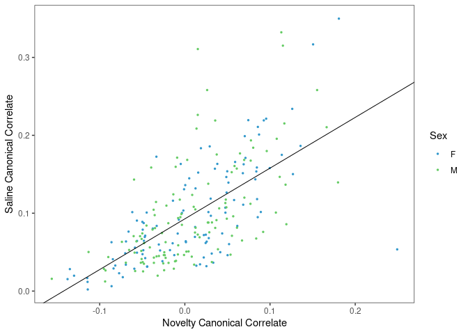

Last updated: 2024-04-02
Checks: 7 0
Knit directory: rta/
This reproducible R Markdown analysis was created with workflowr (version 1.7.0). The Checks tab describes the reproducibility checks that were applied when the results were created. The Past versions tab lists the development history.
Great! Since the R Markdown file has been committed to the Git repository, you know the exact version of the code that produced these results.
Great job! The global environment was empty. Objects defined in the global environment can affect the analysis in your R Markdown file in unknown ways. For reproduciblity it’s best to always run the code in an empty environment.
The command set.seed(20200501) was run prior to running
the code in the R Markdown file. Setting a seed ensures that any results
that rely on randomness, e.g. subsampling or permutations, are
reproducible.
Great job! Recording the operating system, R version, and package versions is critical for reproducibility.
Nice! There were no cached chunks for this analysis, so you can be confident that you successfully produced the results during this run.
Great job! Using relative paths to the files within your workflowr project makes it easier to run your code on other machines.
Great! You are using Git for version control. Tracking code development and connecting the code version to the results is critical for reproducibility.
The results in this page were generated with repository version 6065daa. See the Past versions tab to see a history of the changes made to the R Markdown and HTML files.
Note that you need to be careful to ensure that all relevant files for
the analysis have been committed to Git prior to generating the results
(you can use wflow_publish or
wflow_git_commit). workflowr only checks the R Markdown
file, but you know if there are other scripts or data files that it
depends on. Below is the status of the Git repository when the results
were generated:
Ignored files:
Ignored: .Rhistory
Ignored: .Rproj.user/
Ignored: code/.Rapp.history
Ignored: data/.Rhistory
Ignored: data/RDS/
Ignored: run/
Untracked files:
Untracked: LICENSE
Untracked: Rplot.pdf
Untracked: SENSI_chr7_snps.R
Untracked: Untitled.R
Untracked: analysis/17_mapping_interpretation_old.Rmd
Untracked: analysis/temp.txt
Untracked: code/DO_IVSA_SALINE_pleiotropy.R
Untracked: code/DO_IVSA_SENS_pleiotropy.R
Untracked: code/DO_SENS_SALINE_pleiotropy.R
Untracked: code/DO_eQTL_perms.R
Untracked: code/DO_eQTL_score_calc.R
Untracked: code/SENSI_chr7_snps.R
Untracked: code/STAR_RSEM_416.sh
Untracked: code/eQTL_plotting_DO_striatum_416.R
Untracked: code/ggplot_pub_themes.R
Untracked: code/pleitropy_analysis.sbatch
Untracked: code/pleitropy_saline_analysis.sbatch
Untracked: code/pleitropy_sensi_saline_analysis.sbatch
Untracked: code/rta_mapping_figure_leftover.R
Untracked: data/20_elastic_mv_results.csv
Untracked: data/20_elasticnet_predictions.RDS
Untracked: data/DO_416_DGEList.RDS
Untracked: data/DO_416_DGEList_unfiltered (michael.saul@jax.org 2).RDS
Untracked: data/DO_416_DGEList_unfiltered (michael.saul@jax.org 3).RDS
Untracked: data/DO_416_DGEList_unfiltered (michael.saul@jax.org 4).RDS
Untracked: data/DO_416_DGEList_unfiltered (michael.saul@jax.org).RDS
Untracked: data/DO_416_DGEList_unfiltered.RDS
Untracked: data/DO_416_ERCC_DGEList.RDS
Untracked: data/DO_416_ERCC_cpm.RDS
Untracked: data/DO_416_normrt.RDS
Untracked: data/DO_416_pheno.RDS
Untracked: data/DO_416_pheno_allgenes.RDS
Untracked: data/DO_416_voom (michael.saul@jax.org).RDS
Untracked: data/DO_416_voom.RDS
Untracked: data/DO_416_voom_allgenes (michael.saul@jax.org 2).RDS
Untracked: data/DO_416_voom_allgenes (michael.saul@jax.org).RDS
Untracked: data/DO_416_voom_allgenes.RDS
Untracked: data/DO_416_voom_cpresiduals.RDS
Untracked: data/DO_AQ_active_CoV_toptable_annotated.RDS
Untracked: data/DO_AQ_lever_ratio_toptable_annotated.RDS
Untracked: data/DO_AQ_mean_inf_toptable_annotated.RDS
Untracked: data/DO_AQ_rate_toptable_annotated.RDS
Untracked: data/DO_IVSA_SALINE_pleio_lods.RDS
Untracked: data/DO_IVSA_SENS_pleio_lods.RDS
Untracked: data/DO_IVSA_SENS_pleio_pvl.RDS
Untracked: data/DO_IVSA_acquisition_cancor_df.RDS
Untracked: data/DO_IVSA_acquisition_logit_df.RDS
Untracked: data/DO_IVSA_acquisition_logit_glm.RDS
Untracked: data/DO_IVSA_all_cancor_df.RDS
Untracked: data/DO_IVSA_all_cancor_df_2024-03-27.RDS
Untracked: data/DO_IVSA_all_cancor_df_2024-03-29.RDS
Untracked: data/DO_IVSA_data.RDS
Untracked: data/DO_IVSA_data_2024-03-29.RDS
Untracked: data/DO_IVSA_novelty_cancor_ALL.RDS
Untracked: data/DO_IVSA_novelty_cancor_ALL_2024-03-29.RDS
Untracked: data/DO_IVSA_novelty_cancor_AQ.RDS
Untracked: data/DO_IVSA_novelty_data.RDS
Untracked: data/DO_IVSA_novelty_data_2024-03-29.RDS
Untracked: data/DO_IVSA_prediction_ACQUISITION_logit.RDS
Untracked: data/DO_IVSA_prediction_ACQUISITION_logit_2021-01-04.RDS
Untracked: data/DO_IVSA_prediction_ALL_cancor.RDS
Untracked: data/DO_IVSA_prediction_ALL_cancor_2021-01-04.RDS
Untracked: data/DO_IVSA_prediction_ALL_cancor_old.RDS
Untracked: data/DO_IVSA_prediction_AQ_cancor.RDS
Untracked: data/DO_IVSA_prediction_AQ_cancor_2021-01-04.RDS
Untracked: data/DO_IVSA_prediction_a1_ACQUISITION_logit.RDS
Untracked: data/DO_IVSA_prediction_a2_AQ_cancor.RDS
Untracked: data/DO_IVSA_prediction_a3_ALL_cancor.RDS
Untracked: data/DO_IVSA_prediction_a3_ALL_cancor_
Untracked: data/DO_IVSA_prediction_a3_ALL_cancor_2024-03-25.RDS
Untracked: data/DO_IVSA_prediction_a3_ALL_cancor_2024-03-27.RDS
Untracked: data/DO_IVSA_prediction_a3_ALL_cancor_2024-03-29.RDS
Untracked: data/DO_IVSA_prediction_a4_male_ALL_cancor.RDS
Untracked: data/DO_IVSA_prediction_a5_female_ALL_cancor.RDS
Untracked: data/DO_IVSA_raw_data.RDS
Untracked: data/DO_IVSA_transformed_data.RDS
Untracked: data/DO_LIMS_data.RDS
Untracked: data/DO_RTG_a1_new.qtl.RData
Untracked: data/DO_RTG_a1_new_1000x.qtlpermu.RData
Untracked: data/DO_RTG_a1_new_mapping_1000x.RData
Untracked: data/DO_RTG_a2_new.qtl.RData
Untracked: data/DO_RTG_a2_new_1000x.qtlpermu.RData
Untracked: data/DO_RTG_a2_new_mapping_1000x.RData
Untracked: data/DO_RTG_a3_new.qtl.RData
Untracked: data/DO_RTG_a3_new_1000x.qtlpermu.RData
Untracked: data/DO_RTG_a3_new_mapping_1000x_01.RData
Untracked: data/DO_RTG_a3_new_mapping_1000x_02.RData
Untracked: data/DO_RTG_a4_new.qtl.RData
Untracked: data/DO_RTG_a5_new.qtl.RData
Untracked: data/DO_RTG_elasticnet_new.qtl.RData
Untracked: data/DO_RTG_elasticnet_new_mapping_1000x.RData
Untracked: data/DO_RTG_project_df_for_mapping.RDS
Untracked: data/DO_RTG_project_df_for_mapping_2020-11-06.RDS
Untracked: data/DO_RTG_project_df_for_mapping_a2.RDS
Untracked: data/DO_RTG_project_df_for_mapping_sexspecific.RDS
Untracked: data/DO_SENS_SALINE_pleio_lods.RDS
Untracked: data/DO_cocaine_measures_data.RDS
Untracked: data/DO_demographic_data_df.RDS
Untracked: data/DO_eigengene_significance.RDS
Untracked: data/DO_eigengenes.RDS
Untracked: data/DO_elasticnet_GEX_pvalue_histograms.RData
Untracked: data/DO_highcor_cpresiduals_datatable.RDS
Untracked: data/DO_holeboard_data_df.RDS
Untracked: data/DO_holeboard_summarized.RDS
Untracked: data/DO_lightdark_data_df.RDS
Untracked: data/DO_mQTL_peaks.RDS
Untracked: data/DO_mQTL_scan1s.RDS
Untracked: data/DO_module_membership.RDS
Untracked: data/DO_novelplace_data_df.RDS
Untracked: data/DO_novelty_COC_cancor.RDS
Untracked: data/DO_novelty_COC_cancor_2024-04-02.RDS
Untracked: data/DO_novelty_SAL_cancor.RDS
Untracked: data/DO_novelty_SAL_cancor_2024-04-02.RDS
Untracked: data/DO_novelty_data.RDS
Untracked: data/DO_novelty_data_2024-03-29.RDS
Untracked: data/DO_novelty_response_data.RDS
Untracked: data/DO_novelty_response_data_for_RTG.RDS
Untracked: data/DO_novelty_response_data_with_transform.csv
Untracked: data/DO_novelty_saline_cocaine_cancor.RDS
Untracked: data/DO_novelty_saline_cocaine_cancor_2024-04-02.RDS
Untracked: data/DO_openfield_data_df.RDS
Untracked: data/DO_paraclique_data.el
Untracked: data/DO_paraclique_eigengenes.RDS
Untracked: data/DO_paraclique_significance_elasticnet.RDS
Untracked: data/DO_paracliques.RDS
Untracked: data/DO_paracliques_significance.RDS
Untracked: data/DO_ploidy_calls.RDS
Untracked: data/DO_pmap.RDS
Untracked: data/DO_pvalue_histograms.RData
Untracked: data/DO_rtg_a1_toptable_annotated.RDS
Untracked: data/DO_rtg_a2_toptable_annotated.RDS
Untracked: data/DO_rtg_a3_toptable_annotated.RDS
Untracked: data/DO_rtg_m1_toptable_annotated.RDS
Untracked: data/DO_rtg_m2_toptable_annotated.RDS
Untracked: data/DO_rtg_m3_toptable_annotated.RDS
Untracked: data/DO_saline.qtl.RData
Untracked: data/DO_saline_measures_data.RDS
Untracked: data/DO_sensi_cocaine.qtl.RData
Untracked: data/DO_str_2016_eQTL.RData
Untracked: data/DO_str_2016_gm4qtl2.zip
Untracked: data/DO_str_2016_gm4qtl2_intensities.fst
Untracked: data/DO_voom_cpresiduals_NArm.RDS
Untracked: data/DO_wgcna.RDS
Untracked: data/IVSA_RTG_a3_blup.pdf
Untracked: data/IVSA_h2_2019-11-18.tsv
Untracked: data/IVSA_metadata_sheet.RDS
Untracked: data/ME16_edges.tsv
Untracked: data/Mus_musculus.GRCm38.94.parsed.RDS
Untracked: data/Paraclique_19_MF_AMIGO.txt
Untracked: data/RTG_QTL_peaks.RDS
Untracked: data/RTG_figure.RDS
Untracked: data/SENSI_chr7_snps.RData
Untracked: data/SENS_RTG/
Untracked: data/Tyr2_genotypes.RDS
Untracked: data/Tyr_genotypes.RDS
Untracked: data/blup_chr7_DO_RTG_a3.RDS
Untracked: data/blup_spearman_cors.RData
Untracked: data/cc_variants/
Untracked: data/chr18_QTL_results.RDS
Untracked: data/chr4_QTL_results.RDS
Untracked: data/chr7_a3_QTL_results.RDS
Untracked: data/chr7_blups_with_rtg.RDS
Untracked: data/chr7_cocaine_BLUP.RDS
Untracked: data/chr7_gene_blup.RDS
Untracked: data/chr7_qtl_cors_with_spearman_blups.RDS
Untracked: data/chr7_sensi_cocaine_BLUP.RDS
Untracked: data/cis/
Untracked: data/eQTL_annotated_peaks.RDS
Untracked: data/eQTL_plots.RData
Untracked: data/figures/
Untracked: data/founders_key/
Untracked: data/gigamuga/
Untracked: data/gwas/
Untracked: data/info/
Untracked: data/m2G.a2.RTG.chr4snp.RData
Untracked: data/mapping/
Untracked: data/mapping_from_hao/
Untracked: data/mpd_measures_saline.txt
Untracked: data/mpd_measures_saline_cocaine.txt
Untracked: data/perms/
Untracked: data/pleio_df.RDS
Untracked: data/qtl2/
Untracked: data/raw/
Untracked: data/resources/
Untracked: data/tads_loops/
Untracked: data/transcripts/
Untracked: data/variants/
Untracked: logs/
Untracked: new_RTG_a3.jpeg
Untracked: output/DO_module_membership.tsv
Untracked: output/DO_paraclique_df.tsv
Untracked: output/RDS/
Untracked: output/RTG_out/
Untracked: output/docs_backup_2020-07-30.tar.gz
Untracked: output/elastic_net_out/
Untracked: output/mapping_figure.pdf
Untracked: output/mapping_plot.pdf
Untracked: output/mediation_all_rta_figure.pdf
Untracked: output/mediation_all_rta_figure_with_eed.pdf
Untracked: output/pleio_plot2.pdf
Untracked: rstudio_rta.sif
Untracked: singularity/
Untracked: tmp/
Untracked: var/
Unstaged changes:
Deleted: .Rprofile
Modified: .gitignore
Modified: README.md
Modified: analysis/17_mapping_interpretation.Rmd
Modified: analysis/_site.yml
Note that any generated files, e.g. HTML, png, CSS, etc., are not included in this status report because it is ok for generated content to have uncommitted changes.
These are the previous versions of the repository in which changes were
made to the R Markdown
(analysis/22_DO_RTA_saline_cocaine.Rmd) and HTML
(docs/22_DO_RTA_saline_cocaine.html) files. If you’ve
configured a remote Git repository (see ?wflow_git_remote),
click on the hyperlinks in the table below to view the files as they
were in that past version.
| File | Version | Author | Date | Message |
|---|---|---|---|---|
| Rmd | 6065daa | Michael C. Saul | 2024-04-02 | Edited the MPD call so that the public version is the only version that is conserved. |
| html | 96203d5 | Michael C. Saul | 2024-04-02 | Build site. |
| Rmd | fc82bd1 | Michael C. Saul | 2024-04-02 | Changing MPD to public version (note: old version preserved for now. |
| html | 9a95311 | Michael C. Saul | 2022-04-28 | Build site. |
| html | 7d756c4 | Michael C. Saul | 2022-03-11 | Build site. |
| Rmd | 7567181 | Michael C. Saul | 2022-03-11 | Saving the saline and cocaine measures from MPD |
| html | 6c5ce0e | Michael C. Saul | 2022-03-11 | Build site. |
| Rmd | 8fa6f9a | Michael C. Saul | 2022-03-11 | Committing to fix another absolute file path |
| html | ad47706 | Michael C. Saul | 2022-03-11 | Build site. |
| Rmd | 1396c1e | Michael C. Saul | 2022-03-11 | Committing to fix an absolute file path |
| html | 7deeb6d | Michael C. Saul | 2022-03-11 | Build site. |
| Rmd | 4c0fdc3 | Michael C. Saul | 2022-03-11 | Initial commit of the saline and cocaine RTA |
This analysis is performed to process the novelty data, sensitization saline data, and sensitization cocaine data. 2) Strain-by-sex means and standard errors for plotting
These data were collected by the CSNA behavioral phenotyping core.
Calling R libraries necessary for this analysis.
library("dplyr")
library("tidyr")
library("tidyverse")
library("lubridate")
library("ggplot2")
library("cowplot")
library("MASS")
library("ggbeeswarm")Getting current date
current_date = format(Sys.time(),"%Y-%m-%d")
current_date[1] "2024-04-02"Currently using internal access to the JAX MPD curation site.
MPD_prefix = "http://mpdcuration.jax.org:82/api/pheno/animalvals/"
MPD_suffix = "?csv=yes"First, getting table of saline and cocaine measures in MPD
saline_cocaine_measures = read.table("./data/mpd_measures_saline_cocaine.txt",
header = TRUE, sep = "\t")
# filtering to only post-injection data
saline_measures_post = saline_cocaine_measures[which(saline_cocaine_measures$injection_time == "post" &
saline_cocaine_measures$saline_cocaine == "saline"),]
cocaine_measures_post = saline_cocaine_measures[which(saline_cocaine_measures$injection_time == "post" &
saline_cocaine_measures$saline_cocaine == "cocaine"),]Next, getting cocaine and saline datasets from MPD.
# Getting a base for the MPD measures
mpd_series_base = "https://phenome.jax.org/api/pheno/animalvals/series/MEASURE?csv=1"
# Getting cocaine sensitization MPD measures IDs
cocaine_sensi_measures = c("90309","90315","90321","90327",
"90442","90333","90387")
cocaine_sensi_colnames = c("animal_id", cocaine_measures_post$measure)
# Getting saline sensitization MPD measures IDs
saline_sensi_measures = c("90306","90312","90318","90324",
"90439","90330","90384")
saline_sensi_colnames = c("animal_id", saline_measures_post$measure)
# Pulling data from MPD for cocaine locomotor sensitization
for (i in seq_len(length(cocaine_sensi_measures))) {
mpd_csv_i = gsub("MEASURE", cocaine_sensi_measures[i], mpd_series_base)
mpd_table_i = read_csv(mpd_csv_i)
if (i == 1) {
mpd_cocaine_table_long = mpd_table_i
} else {
mpd_cocaine_table_long = rbind(mpd_cocaine_table_long, mpd_table_i)
}
}Rows: 490 Columns: 11
── Column specification ────────────────────────────────────────────────────────
Delimiter: ","
chr (6): projsym, varname, strain, sex, animal_id, stocknum
dbl (4): measnum, value, animal_projid, strainid
lgl (1): label
ℹ Use `spec()` to retrieve the full column specification for this data.
ℹ Specify the column types or set `show_col_types = FALSE` to quiet this message.
Rows: 490 Columns: 11
── Column specification ────────────────────────────────────────────────────────
Delimiter: ","
chr (6): projsym, varname, strain, sex, animal_id, stocknum
dbl (4): measnum, value, animal_projid, strainid
lgl (1): label
ℹ Use `spec()` to retrieve the full column specification for this data.
ℹ Specify the column types or set `show_col_types = FALSE` to quiet this message.
Rows: 483 Columns: 11
── Column specification ────────────────────────────────────────────────────────
Delimiter: ","
chr (6): projsym, varname, strain, sex, animal_id, stocknum
dbl (4): measnum, value, animal_projid, strainid
lgl (1): label
ℹ Use `spec()` to retrieve the full column specification for this data.
ℹ Specify the column types or set `show_col_types = FALSE` to quiet this message.
Rows: 406 Columns: 11
── Column specification ────────────────────────────────────────────────────────
Delimiter: ","
chr (6): projsym, varname, strain, sex, animal_id, stocknum
dbl (4): measnum, value, animal_projid, strainid
lgl (1): label
ℹ Use `spec()` to retrieve the full column specification for this data.
ℹ Specify the column types or set `show_col_types = FALSE` to quiet this message.
Rows: 377 Columns: 11
── Column specification ────────────────────────────────────────────────────────
Delimiter: ","
chr (6): projsym, varname, strain, sex, animal_id, stocknum
dbl (4): measnum, value, animal_projid, strainid
lgl (1): label
ℹ Use `spec()` to retrieve the full column specification for this data.
ℹ Specify the column types or set `show_col_types = FALSE` to quiet this message.
Rows: 4327 Columns: 11
── Column specification ────────────────────────────────────────────────────────
Delimiter: ","
chr (6): projsym, varname, strain, sex, animal_id, stocknum
dbl (5): measnum, label, value, animal_projid, strainid
ℹ Use `spec()` to retrieve the full column specification for this data.
ℹ Specify the column types or set `show_col_types = FALSE` to quiet this message.
Rows: 4323 Columns: 11
── Column specification ────────────────────────────────────────────────────────
Delimiter: ","
chr (7): projsym, varname, label, strain, sex, animal_id, stocknum
dbl (4): measnum, value, animal_projid, strainid
ℹ Use `spec()` to retrieve the full column specification for this data.
ℹ Specify the column types or set `show_col_types = FALSE` to quiet this message.# Getting cocaine measure names
cocaine_measure_names = unique(pull(mpd_cocaine_table_long, varname))
# Making a wide format table for cocaine measures
mpd_cocaine_sensi_table = mpd_cocaine_table_long |>
pivot_wider(id_cols = c(animal_id, animal_projid, strain,
sex, stocknum, strainid),
names_from = varname,
values_from = value) |>
filter(strain == "J:DO") |>
as.data.frame()
row.names(mpd_cocaine_sensi_table) = mpd_cocaine_sensi_table$animal_id
cocaine_measures_data = mpd_cocaine_sensi_table[,cocaine_sensi_colnames]
# Pulling data from MPD for saline locomotor sensitization
for (i in seq_len(length(saline_sensi_measures))) {
mpd_csv_i = gsub("MEASURE", saline_sensi_measures[i], mpd_series_base)
mpd_table_i = read_csv(mpd_csv_i)
if (i == 1) {
mpd_saline_table_long = mpd_table_i
} else {
mpd_saline_table_long = rbind(mpd_saline_table_long, mpd_table_i)
}
}Rows: 474 Columns: 11
── Column specification ────────────────────────────────────────────────────────
Delimiter: ","
chr (6): projsym, varname, strain, sex, animal_id, stocknum
dbl (4): measnum, value, animal_projid, strainid
lgl (1): label
ℹ Use `spec()` to retrieve the full column specification for this data.
ℹ Specify the column types or set `show_col_types = FALSE` to quiet this message.
Rows: 473 Columns: 11
── Column specification ────────────────────────────────────────────────────────
Delimiter: ","
chr (6): projsym, varname, strain, sex, animal_id, stocknum
dbl (4): measnum, value, animal_projid, strainid
lgl (1): label
ℹ Use `spec()` to retrieve the full column specification for this data.
ℹ Specify the column types or set `show_col_types = FALSE` to quiet this message.
Rows: 471 Columns: 11
── Column specification ────────────────────────────────────────────────────────
Delimiter: ","
chr (6): projsym, varname, strain, sex, animal_id, stocknum
dbl (4): measnum, value, animal_projid, strainid
lgl (1): label
ℹ Use `spec()` to retrieve the full column specification for this data.
ℹ Specify the column types or set `show_col_types = FALSE` to quiet this message.
Rows: 399 Columns: 11
── Column specification ────────────────────────────────────────────────────────
Delimiter: ","
chr (6): projsym, varname, strain, sex, animal_id, stocknum
dbl (4): measnum, value, animal_projid, strainid
lgl (1): label
ℹ Use `spec()` to retrieve the full column specification for this data.
ℹ Specify the column types or set `show_col_types = FALSE` to quiet this message.
Rows: 371 Columns: 11
── Column specification ────────────────────────────────────────────────────────
Delimiter: ","
chr (6): projsym, varname, strain, sex, animal_id, stocknum
dbl (4): measnum, value, animal_projid, strainid
lgl (1): label
ℹ Use `spec()` to retrieve the full column specification for this data.
ℹ Specify the column types or set `show_col_types = FALSE` to quiet this message.
Rows: 4212 Columns: 11
── Column specification ────────────────────────────────────────────────────────
Delimiter: ","
chr (6): projsym, varname, strain, sex, animal_id, stocknum
dbl (5): measnum, label, value, animal_projid, strainid
ℹ Use `spec()` to retrieve the full column specification for this data.
ℹ Specify the column types or set `show_col_types = FALSE` to quiet this message.
Rows: 4208 Columns: 11
── Column specification ────────────────────────────────────────────────────────
Delimiter: ","
chr (6): projsym, varname, strain, sex, animal_id, stocknum
dbl (5): measnum, label, value, animal_projid, strainid
ℹ Use `spec()` to retrieve the full column specification for this data.
ℹ Specify the column types or set `show_col_types = FALSE` to quiet this message.# Getting saline measure names
saline_measure_names = unique(pull(mpd_saline_table_long, varname))
# Making a wide format table for saline measures
mpd_saline_sensi_table = mpd_saline_table_long |>
pivot_wider(id_cols = c(animal_id, animal_projid, strain,
sex, stocknum, strainid),
names_from = varname,
values_from = value) |>
filter(strain == "J:DO") |>
as.data.frame()
row.names(mpd_saline_sensi_table) = mpd_saline_sensi_table$animal_id
saline_measures_data = mpd_saline_sensi_table[,saline_sensi_colnames]Loading novelty response data and preparing for RTA.
DO_novelty_response = readRDS("./data/DO_novelty_response_data.RDS")
DO_novelty_response$Sex = gsub("^([MF])\\w+$","\\1",DO_novelty_response$Sex)
DO_saline_novelty = DO_novelty_response[row.names(saline_measures_data),]
DO_saline_novelty = cbind(DO_saline_novelty, saline_measures_data[,-1])
DO_cocaine_novelty = DO_novelty_response[row.names(cocaine_measures_data),]
DO_cocaine_novelty = cbind(DO_cocaine_novelty, cocaine_measures_data[,-1])
# Getting columns of each type of measure
saline_columns = colnames(saline_measures_data[,-1])
cocaine_columns = colnames(cocaine_measures_data[,-1])
novelty_columns = colnames(DO_novelty_response)
novelty_columns = novelty_columns[grep("batch_ranknorm$",novelty_columns)]# Getting highest correlation variables to start out
highest_cor = cor(DO_saline_novelty[,"dist_d3_d11_auc_cont_do"],
DO_saline_novelty[,novelty_columns],
use = "pairwise.complete.obs")
highest_cor_r = max(abs(highest_cor))
highest_cor_ind = which(abs(highest_cor) == highest_cor_r, arr.ind = TRUE)
saline_highcor_id = "dist_d3_d11_auc_cont_do"
novelty_highcor_id = colnames(highest_cor)[highest_cor_ind[1,"col"]]
paste0("The highest correlation (", round(highest_cor_r, 2),") is between ", saline_highcor_id, " and ",
novelty_highcor_id, ".")[1] "The highest correlation (0.53) is between dist_d3_d11_auc_cont_do and OFA_total_distance_traveled_batch_ranknorm."Running canonical correlation on saline-treated animals
# Starting with these as best novelty and IVSA variables
best_novelty_vars = novelty_highcor_id
best_saline_vars = saline_highcor_id
noNA_rows = which(rowSums(is.na(DO_saline_novelty[,c(best_novelty_vars, best_saline_vars)])) == 0)
starting_cancor = stats::cancor(DO_saline_novelty[noNA_rows,best_novelty_vars],
DO_saline_novelty[noNA_rows,best_saline_vars],
xcenter = TRUE, ycenter = TRUE)
# Selecting appropriate saline variables
saline_vars_unselected = c("dist_d3_d2_cont_do","dist_d5_d3_cont_do","dist_d12_d2_cont_do","dist_d19_d11_cont_do")
novelty_vars_unselected = novelty_columns[(-1 * which(novelty_columns == best_novelty_vars))]
not_optimized = TRUE
min_obs = 225
max_var = 10
while (not_optimized) {
best_cancor = starting_cancor$cor[1]
best_var = ""
best_paradigm = ""
for (i in novelty_vars_unselected) {
noNA_rows = which(rowSums(is.na(DO_saline_novelty[,c(best_novelty_vars, i, best_saline_vars)])) == 0)
if (length(noNA_rows) >= min_obs) {
cancor_i = stats::cancor(DO_saline_novelty[noNA_rows, c(best_novelty_vars, i)], DO_saline_novelty[noNA_rows, best_saline_vars],
xcenter = TRUE, ycenter = TRUE)
if (cancor_i$cor[1] > best_cancor) {
best_cancor = cancor_i$cor[1]
best_var = i
best_paradigm = "novelty"
}
}
}
for (j in saline_vars_unselected) {
noNA_rows = which(rowSums(is.na(DO_saline_novelty[,c(best_novelty_vars, j, best_saline_vars)])) == 0)
if (length(noNA_rows) >= min_obs) {
cancor_j = stats::cancor(DO_saline_novelty[noNA_rows, best_novelty_vars], DO_saline_novelty[noNA_rows,c(best_saline_vars, j)],
xcenter = TRUE, ycenter = TRUE)
if (cancor_j$cor[1] > best_cancor) {
best_cancor = cancor_j$cor[1]
best_var = j
best_paradigm = "saline"
}
}
}
if (best_paradigm == "novelty") {
novelty_vars_test = c(best_novelty_vars, best_var)
saline_vars_test = best_saline_vars
} else if (best_paradigm == "saline") {
novelty_vars_test = best_novelty_vars
saline_vars_test = c(best_saline_vars, best_var)
}
noNA_rows = which(rowSums(is.na(DO_saline_novelty[,c(novelty_vars_test, saline_vars_test)])) == 0)
k_gtr = c()
B = 1e4
for (k in 1:B) {
cancor_k = stats::cancor(DO_saline_novelty[sample(noNA_rows), novelty_vars_test],
DO_saline_novelty[noNA_rows, saline_vars_test],
xcenter = TRUE, ycenter = TRUE)
k_gtr = c(k_gtr, cancor_k$cor[1])
}
p_value_improvement = (length(which(k_gtr > best_cancor)) + 1) / (B + 1)
if ((length(best_novelty_vars) + length(best_saline_vars)) > max_var) {
not_optimized = FALSE
} else if (p_value_improvement < 0.001) {
if (best_paradigm == "novelty") {
best_novelty_vars = c(best_novelty_vars, best_var)
novelty_vars_unselected = novelty_vars_unselected[-1 * which(novelty_vars_unselected == best_var)]
} else if (best_paradigm == "saline") {
best_saline_vars = c(best_saline_vars, best_var)
saline_vars_unselected = saline_vars_unselected[-1 * which(saline_vars_unselected == best_var)]
}
starting_cancor = stats::cancor(DO_saline_novelty[noNA_rows,best_novelty_vars], DO_saline_novelty[noNA_rows,best_saline_vars],
xcenter = TRUE, ycenter = TRUE)
} else {
not_optimized = FALSE
}
}
noNA_rows = which(rowSums(is.na(DO_saline_novelty[,c(best_novelty_vars, best_saline_vars)])) == 0)
cat("Best novelty variables:\n", paste(best_novelty_vars, sep = "", collapse = "\n"),"\n\n", sep = "")Best novelty variables:
OFA_total_distance_traveled_batch_ranknorm
NPP_NoveltyPreference_ZoneTime_WhiteVsBlack_Total_batch_ranknorm
OFA_total_resting_time_in_center_batch_ranknorm
OFA_distance_traveled_last_five_batch_ranknorm
OFA_total_distance_traveled_in_corner_batch_ranknorm
OFA_pct_time_corner_batch_ranknorm
OFA_pct_resting_time_center_batch_ranknormcat("Best saline variables:\n", paste(best_saline_vars, sep = "", collapse = "\n"), "\n\n", sep = "")Best saline variables:
dist_d3_d11_auc_cont_do
dist_d3_d2_cont_do
dist_d5_d3_cont_do
dist_d19_d11_cont_docat("First canonical correlate magnitude: ", round(starting_cancor$cor[1], 4), "\n\n", sep = "")First canonical correlate magnitude: 0.6532cat("Canonical correlation trained on ", length(noNA_rows), " complete observations.", sep = "")Canonical correlation trained on 237 complete observations.Adjusting this canonical correlation for sex.
DO_saline_novelty$DE_Sex = DO_saline_novelty$Sex
DO_saline_novelty$Sex = ifelse(DO_saline_novelty$DE_Sex == "M", 1, 0)
novelty_cancor_vars_SAL = c(best_novelty_vars,"Sex")
saline_cancor_vars_SAL = c(best_saline_vars,"Sex")
saline_cancor_rows_SAL = which(rowSums(is.na(DO_saline_novelty[,c(novelty_cancor_vars_SAL,saline_cancor_vars_SAL)])) == 0)
saline_novelty_cancor_SAL = stats::cancor(DO_saline_novelty[saline_cancor_rows_SAL,saline_cancor_vars_SAL],
DO_saline_novelty[saline_cancor_rows_SAL,novelty_cancor_vars_SAL],
xcenter = TRUE, ycenter = TRUE)
paste("The first canonical correlate of these saline variables to novelty variables has a magnitude of ",
round(saline_novelty_cancor_SAL$cor[2], digits = 3),
".", sep = "")[1] "The first canonical correlate of these saline variables to novelty variables has a magnitude of 0.651."paste("This canonical correlation is based upon ",
length(saline_cancor_rows_SAL), " complete observations.", sep = "")[1] "This canonical correlation is based upon 237 complete observations."This is an adequate fit for the canonical correlation. Plotting the variables.
source("./code/ggplot_pub_themes.R")Warning: The `size` argument of `element_line()` is deprecated as of ggplot2 3.4.0.
ℹ Please use the `linewidth` argument instead.
This warning is displayed once every 8 hours.
Call `lifecycle::last_lifecycle_warnings()` to see where this warning was
generated.saline_cancor = as.matrix(DO_saline_novelty[saline_cancor_rows_SAL,saline_cancor_vars_SAL]) %*% saline_novelty_cancor_SAL$xcoef[,2]
novelty_cancor = as.matrix(DO_saline_novelty[saline_cancor_rows_SAL,novelty_cancor_vars_SAL]) %*% saline_novelty_cancor_SAL$ycoef[,2]
saline_novelty_cancor_SAL_df = data.frame(saline_cancor = saline_cancor, novelty_cancor = novelty_cancor)
saline_novelty_cancor_SAL_df$Sex = DO_saline_novelty[row.names(saline_novelty_cancor_SAL_df),"DE_Sex"]
saline_novelty_cancor_SAL_df$Subject = as.numeric(as.character(row.names(saline_novelty_cancor_SAL_df)))
saline_novelty_cancor_SAL_df$Acquired = DO_saline_novelty[row.names(saline_novelty_cancor_SAL_df),"DE_Exit_Reason"]
saline_novelty_cancor_lm = lm(saline_cancor ~ novelty_cancor, data = saline_novelty_cancor_SAL_df)
novelty_saline_SAL_cancor_plot = ggplot(data = saline_novelty_cancor_SAL_df, aes(x = novelty_cancor, y = saline_cancor, color = Sex)) +
geom_point(size = (pt_to_mm * 1.5)) +
geom_abline(slope = saline_novelty_cancor_lm$coefficients["novelty_cancor"],
intercept = saline_novelty_cancor_lm$coefficients["(Intercept)"],
size = (1 * pt_to_mm)) +
scale_color_manual(values = c("#3399CC","#66CC66")) +
xlab("Novelty Canonical Correlate") +
ylab("Saline Canonical Correlate")Warning: Using `size` aesthetic for lines was deprecated in ggplot2 3.4.0.
ℹ Please use `linewidth` instead.
This warning is displayed once every 8 hours.
Call `lifecycle::last_lifecycle_warnings()` to see where this warning was
generated.novelty_saline_SAL_cancor_plot + theme_bw() + theme(panel.grid = element_line(color = "#FFFFFF"))
| Version | Author | Date |
|---|---|---|
| 96203d5 | Michael C. Saul | 2024-04-02 |
# Getting highest correlation variables to start out
highest_cor = cor(DO_cocaine_novelty[,"dist_d3_d11_auc_cocaine_do"],
DO_cocaine_novelty[,novelty_columns],
use = "pairwise.complete.obs")
highest_cor_r = max(abs(highest_cor))
highest_cor_ind = which(abs(highest_cor) == highest_cor_r, arr.ind = TRUE)
cocaine_highcor_id = "dist_d3_d11_auc_cocaine_do"
novelty_highcor_id = colnames(highest_cor)[highest_cor_ind[1,"col"]]
paste0("The highest correlation (", round(highest_cor_r, 2),") is between ", cocaine_highcor_id, " and ",
novelty_highcor_id, ".")[1] "The highest correlation (0.53) is between dist_d3_d11_auc_cocaine_do and OFA_total_distance_traveled_batch_ranknorm."Running canonical correlation on cocaine-treated animals
# Starting with these as best novelty and IVSA variables
best_novelty_vars = novelty_highcor_id
best_cocaine_vars = cocaine_highcor_id
noNA_rows = which(rowSums(is.na(DO_cocaine_novelty[,c(best_novelty_vars, best_cocaine_vars)])) == 0)
starting_cancor = stats::cancor(DO_cocaine_novelty[noNA_rows,best_novelty_vars],
DO_cocaine_novelty[noNA_rows,best_cocaine_vars],
xcenter = TRUE, ycenter = TRUE)
# Selecting cocaine sensi variables
cocaine_vars_unselected = c("dist_d3_d2_cocaine_do","dist_d5_d3_cocaine_do","dist_d12_d2_cocaine_do","dist_d19_d11_cocaine_do")
novelty_vars_unselected = novelty_columns[(-1 * which(novelty_columns == best_novelty_vars))]
not_optimized = TRUE
min_obs = 225
max_var = 10
while (not_optimized) {
best_cancor = starting_cancor$cor[1]
best_var = ""
best_paradigm = ""
for (i in novelty_vars_unselected) {
noNA_rows = which(rowSums(is.na(DO_cocaine_novelty[,c(best_novelty_vars, i, best_cocaine_vars)])) == 0)
if (length(noNA_rows) >= min_obs) {
cancor_i = stats::cancor(DO_cocaine_novelty[noNA_rows, c(best_novelty_vars, i)], DO_cocaine_novelty[noNA_rows, best_cocaine_vars],
xcenter = TRUE, ycenter = TRUE)
if (cancor_i$cor[1] > best_cancor) {
best_cancor = cancor_i$cor[1]
best_var = i
best_paradigm = "novelty"
}
}
}
for (j in cocaine_vars_unselected) {
noNA_rows = which(rowSums(is.na(DO_cocaine_novelty[,c(best_novelty_vars, j, best_cocaine_vars)])) == 0)
if (length(noNA_rows) >= min_obs) {
cancor_j = stats::cancor(DO_cocaine_novelty[noNA_rows, best_novelty_vars], DO_cocaine_novelty[noNA_rows,c(best_cocaine_vars, j)],
xcenter = TRUE, ycenter = TRUE)
if (cancor_j$cor[1] > best_cancor) {
best_cancor = cancor_j$cor[1]
best_var = j
best_paradigm = "cocaine"
}
}
}
if (best_paradigm == "novelty") {
novelty_vars_test = c(best_novelty_vars, best_var)
cocaine_vars_test = best_cocaine_vars
} else if (best_paradigm == "cocaine") {
novelty_vars_test = best_novelty_vars
cocaine_vars_test = c(best_cocaine_vars, best_var)
}
noNA_rows = which(rowSums(is.na(DO_cocaine_novelty[,c(novelty_vars_test, cocaine_vars_test)])) == 0)
k_gtr = c()
B = 1e4
for (k in 1:B) {
cancor_k = stats::cancor(DO_cocaine_novelty[sample(noNA_rows), novelty_vars_test],
DO_cocaine_novelty[noNA_rows, cocaine_vars_test],
xcenter = TRUE, ycenter = TRUE)
k_gtr = c(k_gtr, cancor_k$cor[1])
}
p_value_improvement = (length(which(k_gtr > best_cancor)) + 1) / (B + 1)
if ((length(best_novelty_vars) + length(best_cocaine_vars)) > max_var) {
not_optimized = FALSE
} else if (p_value_improvement < 0.001) {
if (best_paradigm == "novelty") {
best_novelty_vars = c(best_novelty_vars, best_var)
novelty_vars_unselected = novelty_vars_unselected[-1 * which(novelty_vars_unselected == best_var)]
} else if (best_paradigm == "cocaine") {
best_cocaine_vars = c(best_cocaine_vars, best_var)
cocaine_vars_unselected = cocaine_vars_unselected[-1 * which(cocaine_vars_unselected == best_var)]
}
starting_cancor = stats::cancor(DO_cocaine_novelty[noNA_rows,best_novelty_vars], DO_cocaine_novelty[noNA_rows,best_cocaine_vars],
xcenter = TRUE, ycenter = TRUE)
} else {
not_optimized = FALSE
}
}
noNA_rows = which(rowSums(is.na(DO_cocaine_novelty[,c(best_novelty_vars, best_cocaine_vars)])) == 0)
cat("Best novelty variables:\n", paste(best_novelty_vars, sep = "", collapse = "\n"),"\n\n", sep = "")Best novelty variables:
OFA_total_distance_traveled_batch_ranknorm
OFA_distance_traveled_slope_batch_ranknorm
LD_pct_ambulatory_Counts_in_light_batch_ranknorm
OFA_total_resting_time_in_perimeter_batch_ranknorm
LD_total_transitions_batch_ranknorm
OFA_total_distance_traveled_in_center_batch_ranknorm
OFA_pct_time_center_batch_ranknormcat("Best cocaine variables:\n", paste(best_cocaine_vars, sep = "", collapse = "\n"), "\n\n", sep = "")Best cocaine variables:
dist_d3_d11_auc_cocaine_do
dist_d3_d2_cocaine_do
dist_d5_d3_cocaine_do
dist_d19_d11_cocaine_docat("First canonical correlate magnitude: ", round(starting_cancor$cor[1], 4), "\n\n", sep = "")First canonical correlate magnitude: 0.6679cat("Canonical correlation trained on ", length(noNA_rows), " complete observations.", sep = "")Canonical correlation trained on 261 complete observations.Adjusting this canonical correlation for sex.
DO_cocaine_novelty$DE_Sex = DO_cocaine_novelty$Sex
DO_cocaine_novelty$Sex = ifelse(DO_cocaine_novelty$DE_Sex == "M", 1, 0)
novelty_cancor_vars_COC = c(best_novelty_vars,"Sex")
cocaine_cancor_vars_COC = c(best_cocaine_vars,"Sex")
cocaine_cancor_rows_COC = which(rowSums(is.na(DO_cocaine_novelty[,c(novelty_cancor_vars_COC,cocaine_cancor_vars_COC)])) == 0)
cocaine_novelty_cancor_COC = stats::cancor(DO_cocaine_novelty[cocaine_cancor_rows_COC,cocaine_cancor_vars_COC],
DO_cocaine_novelty[cocaine_cancor_rows_COC,novelty_cancor_vars_COC],
xcenter = TRUE, ycenter = TRUE)
paste("The first canonical correlate of these cocaine variables to novelty variables has a magnitude of ",
round(cocaine_novelty_cancor_COC$cor[2], digits = 3),
".", sep = "")[1] "The first canonical correlate of these cocaine variables to novelty variables has a magnitude of 0.674."paste("This canonical correlation is based upon ",
length(cocaine_cancor_rows_COC), " complete observations.", sep = "")[1] "This canonical correlation is based upon 261 complete observations."This is an adequate fit for the canonical correlation. Plotting the variables.
source("./code/ggplot_pub_themes.R")
cocaine_cancor = as.matrix(DO_cocaine_novelty[cocaine_cancor_rows_COC,cocaine_cancor_vars_COC]) %*% cocaine_novelty_cancor_COC$xcoef[,2]
novelty_cancor = as.matrix(DO_cocaine_novelty[cocaine_cancor_rows_COC,novelty_cancor_vars_COC]) %*% cocaine_novelty_cancor_COC$ycoef[,2]
cocaine_novelty_cancor_COC_df = data.frame(cocaine_cancor = cocaine_cancor, novelty_cancor = novelty_cancor)
cocaine_novelty_cancor_COC_df$Sex = DO_cocaine_novelty[row.names(cocaine_novelty_cancor_COC_df),"DE_Sex"]
cocaine_novelty_cancor_COC_df$Subject = as.numeric(as.character(row.names(cocaine_novelty_cancor_COC_df)))
cocaine_novelty_cancor_COC_df$Acquired = DO_cocaine_novelty[row.names(cocaine_novelty_cancor_COC_df),"DE_Exit_Reason"]
cocaine_novelty_cancor_lm = lm(cocaine_cancor ~ novelty_cancor, data = cocaine_novelty_cancor_COC_df)
novelty_cocaine_COC_cancor_plot = ggplot(data = cocaine_novelty_cancor_COC_df, aes(x = novelty_cancor, y = cocaine_cancor, color = Sex)) +
geom_point(size = (pt_to_mm * 1.5)) +
geom_abline(slope = cocaine_novelty_cancor_lm$coefficients["novelty_cancor"],
intercept = cocaine_novelty_cancor_lm$coefficients["(Intercept)"],
size = (1 * pt_to_mm)) +
scale_color_manual(values = c("#3399CC","#66CC66")) +
xlab("Novelty Canonical Correlate") +
ylab("Cocaine Sensitization Canonical Correlate")
novelty_cocaine_COC_cancor_plot + theme_bw() + theme(panel.grid = element_line(color = "#FFFFFF"))
| Version | Author | Date |
|---|---|---|
| 96203d5 | Michael C. Saul | 2024-04-02 |
Generating predicted variables from these data.
DO_novelty = DO_novelty_response
DO_novelty$Sex = ifelse(DO_novelty$Sex == "M", 1, 0)
# saline
DO_predict_rows_SAL = row.names(DO_novelty)[which(rowSums(is.na(DO_novelty[,novelty_cancor_vars_SAL])) == 0)]
saline_prediction_SAL = as.numeric(as.matrix(DO_novelty[DO_predict_rows_SAL,novelty_cancor_vars_SAL]) %*% saline_novelty_cancor_SAL$ycoef[,2])
names(saline_prediction_SAL) = DO_predict_rows_SAL
# cocaine
DO_predict_rows_COC = row.names(DO_novelty)[which(rowSums(is.na(DO_novelty[,novelty_cancor_vars_COC])) == 0)]
cocaine_prediction_COC = as.numeric(as.matrix(DO_novelty[DO_predict_rows_COC,novelty_cancor_vars_COC]) %*% cocaine_novelty_cancor_COC$ycoef[,2])
names(cocaine_prediction_COC) = DO_predict_rows_COC
# union
DO_predict_rows_ALL = unique(c(DO_predict_rows_SAL, DO_predict_rows_COC))
saline_cocaine_pred = data.frame(row.names = DO_predict_rows_ALL,
Mouse_ID = DO_predict_rows_ALL,
Sex = DO_novelty[DO_predict_rows_ALL,"Sex"],
Generation = DO_novelty[DO_predict_rows_ALL,"Generation"],
saline_novelty_cancor = saline_prediction_SAL[DO_predict_rows_ALL],
cocaine_novelty_cancor = cocaine_prediction_COC[DO_predict_rows_ALL],
stringsAsFactors = FALSE)
today = as.character(lubridate::today())
saveRDS(saline_cocaine_pred, paste0("./data/DO_novelty_saline_cocaine_cancor_",today,".RDS"))
saveRDS(cocaine_novelty_cancor_COC, paste0("./data/DO_novelty_COC_cancor_",today,".RDS"))
saveRDS(saline_novelty_cancor_SAL, paste0("./data/DO_novelty_SAL_cancor_",today,".RDS"))novelty_saline_cancor_sessionInfo = sessionInfo()
novelty_saline_cancor_sessionInfoR version 4.2.1 (2022-06-23)
Platform: x86_64-pc-linux-gnu (64-bit)
Running under: Ubuntu 20.04.6 LTS
Matrix products: default
BLAS: /usr/lib/x86_64-linux-gnu/openblas-pthread/libblas.so.3
LAPACK: /usr/lib/x86_64-linux-gnu/openblas-pthread/liblapack.so.3
locale:
[1] LC_CTYPE=en_US.UTF-8 LC_NUMERIC=C
[3] LC_TIME=en_US.UTF-8 LC_COLLATE=en_US.UTF-8
[5] LC_MONETARY=en_US.UTF-8 LC_MESSAGES=en_US.UTF-8
[7] LC_PAPER=en_US.UTF-8 LC_NAME=C
[9] LC_ADDRESS=C LC_TELEPHONE=C
[11] LC_MEASUREMENT=en_US.UTF-8 LC_IDENTIFICATION=C
attached base packages:
[1] stats graphics grDevices utils datasets methods base
other attached packages:
[1] ggbeeswarm_0.7.2 MASS_7.3-57 cowplot_1.1.1 lubridate_1.8.0
[5] forcats_0.5.2 stringr_1.5.0 purrr_1.0.1 readr_2.1.3
[9] tibble_3.2.1 ggplot2_3.4.2 tidyverse_1.3.2 tidyr_1.3.0
[13] dplyr_1.1.2
loaded via a namespace (and not attached):
[1] httr_1.4.4 sass_0.4.2 bit64_4.0.5
[4] vroom_1.6.0 jsonlite_1.8.3 modelr_0.1.9
[7] bslib_0.4.0 assertthat_0.2.1 highr_0.9
[10] vipor_0.4.5 googlesheets4_1.0.1 cellranger_1.1.0
[13] yaml_2.3.6 pillar_1.9.0 backports_1.4.1
[16] glue_1.6.2 digest_0.6.30 promises_1.2.0.1
[19] rvest_1.0.3 colorspace_2.0-3 htmltools_0.5.3
[22] httpuv_1.6.6 pkgconfig_2.0.3 broom_1.0.1
[25] haven_2.5.1 scales_1.2.1 whisker_0.4
[28] later_1.3.0 tzdb_0.3.0 git2r_0.32.0
[31] googledrive_2.0.0 farver_2.1.1 generics_0.1.3
[34] ellipsis_0.3.2 cachem_1.0.6 withr_2.5.0
[37] cli_3.4.1 magrittr_2.0.3 crayon_1.5.2
[40] readxl_1.4.2 evaluate_0.17 fs_1.5.2
[43] fansi_1.0.3 xml2_1.3.3 beeswarm_0.4.0
[46] tools_4.2.1 hms_1.1.2 gargle_1.2.1
[49] lifecycle_1.0.3 munsell_0.5.0 reprex_2.0.2
[52] compiler_4.2.1 jquerylib_0.1.4 rlang_1.1.1
[55] grid_4.2.1 rstudioapi_0.14 labeling_0.4.2
[58] rmarkdown_2.17 gtable_0.3.1 curl_4.3.3
[61] DBI_1.1.3 R6_2.5.1 knitr_1.42
[64] fastmap_1.1.0 bit_4.0.4 utf8_1.2.2
[67] workflowr_1.7.0 rprojroot_2.0.3 stringi_1.7.8
[70] parallel_4.2.1 Rcpp_1.0.9 vctrs_0.6.2
[73] dbplyr_2.2.1 tidyselect_1.2.0 xfun_0.39 This document was prepared using RMarkdown in RStudio.
sessionInfo()R version 4.2.1 (2022-06-23)
Platform: x86_64-pc-linux-gnu (64-bit)
Running under: Ubuntu 20.04.6 LTS
Matrix products: default
BLAS: /usr/lib/x86_64-linux-gnu/openblas-pthread/libblas.so.3
LAPACK: /usr/lib/x86_64-linux-gnu/openblas-pthread/liblapack.so.3
locale:
[1] LC_CTYPE=en_US.UTF-8 LC_NUMERIC=C
[3] LC_TIME=en_US.UTF-8 LC_COLLATE=en_US.UTF-8
[5] LC_MONETARY=en_US.UTF-8 LC_MESSAGES=en_US.UTF-8
[7] LC_PAPER=en_US.UTF-8 LC_NAME=C
[9] LC_ADDRESS=C LC_TELEPHONE=C
[11] LC_MEASUREMENT=en_US.UTF-8 LC_IDENTIFICATION=C
attached base packages:
[1] stats graphics grDevices utils datasets methods base
other attached packages:
[1] ggbeeswarm_0.7.2 MASS_7.3-57 cowplot_1.1.1 lubridate_1.8.0
[5] forcats_0.5.2 stringr_1.5.0 purrr_1.0.1 readr_2.1.3
[9] tibble_3.2.1 ggplot2_3.4.2 tidyverse_1.3.2 tidyr_1.3.0
[13] dplyr_1.1.2
loaded via a namespace (and not attached):
[1] httr_1.4.4 sass_0.4.2 bit64_4.0.5
[4] vroom_1.6.0 jsonlite_1.8.3 modelr_0.1.9
[7] bslib_0.4.0 assertthat_0.2.1 highr_0.9
[10] vipor_0.4.5 googlesheets4_1.0.1 cellranger_1.1.0
[13] yaml_2.3.6 pillar_1.9.0 backports_1.4.1
[16] glue_1.6.2 digest_0.6.30 promises_1.2.0.1
[19] rvest_1.0.3 colorspace_2.0-3 htmltools_0.5.3
[22] httpuv_1.6.6 pkgconfig_2.0.3 broom_1.0.1
[25] haven_2.5.1 scales_1.2.1 whisker_0.4
[28] later_1.3.0 tzdb_0.3.0 git2r_0.32.0
[31] googledrive_2.0.0 farver_2.1.1 generics_0.1.3
[34] ellipsis_0.3.2 cachem_1.0.6 withr_2.5.0
[37] cli_3.4.1 magrittr_2.0.3 crayon_1.5.2
[40] readxl_1.4.2 evaluate_0.17 fs_1.5.2
[43] fansi_1.0.3 xml2_1.3.3 beeswarm_0.4.0
[46] tools_4.2.1 hms_1.1.2 gargle_1.2.1
[49] lifecycle_1.0.3 munsell_0.5.0 reprex_2.0.2
[52] compiler_4.2.1 jquerylib_0.1.4 rlang_1.1.1
[55] grid_4.2.1 rstudioapi_0.14 labeling_0.4.2
[58] rmarkdown_2.17 gtable_0.3.1 curl_4.3.3
[61] DBI_1.1.3 R6_2.5.1 knitr_1.42
[64] fastmap_1.1.0 bit_4.0.4 utf8_1.2.2
[67] workflowr_1.7.0 rprojroot_2.0.3 stringi_1.7.8
[70] parallel_4.2.1 Rcpp_1.0.9 vctrs_0.6.2
[73] dbplyr_2.2.1 tidyselect_1.2.0 xfun_0.39